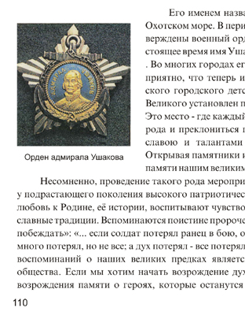
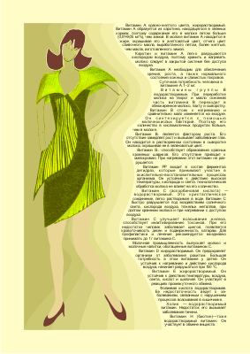
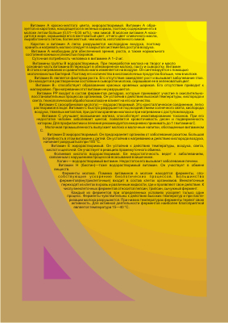
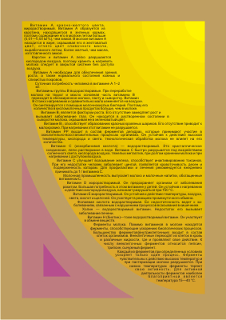
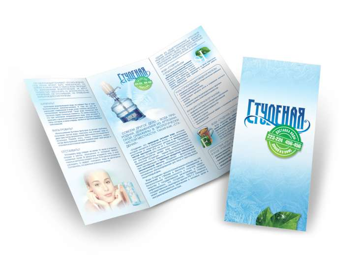
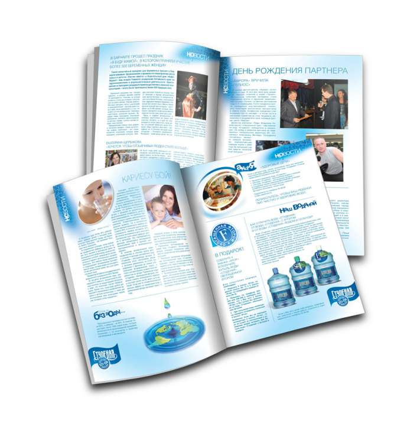
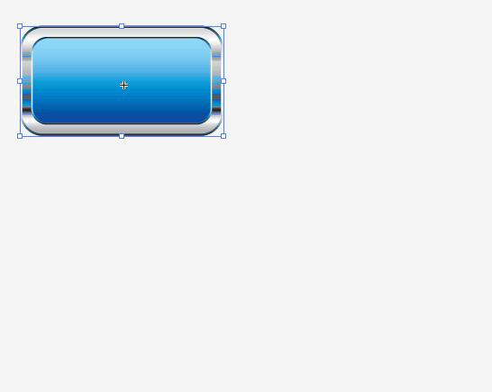

Вёрстка страниц с иллюстрациями
Вёрстка страниц с иллюстрациями в CorelDRAW выполняется не только легко и удобно, но и не требует предварительной подготовки изображений в сторонних программах (растровых редакторах), так как все необходимые параметры изображений можно не только проконтролировать, но и легко и быстро изменить.
Здесь, пожалуй, стоит отметить, что специальные программы для вёрстки InDesign и QuarkXpress не предоставляют возможности пересэмплирования изображений и, кроме того, для вставки изображения в них создаётся специальный т.н. графический блок, который удобств не прибавляет, а иногда и вовсе усложняет работу (скорее всего своим появлением он обязан стереотипу мышления разработчиков: тексту – текстовый блок; изображению – графический блок). В CorelDRAW изображение вставляется на страницу непосредственно, без дополнительного графического блока
Наиболее типичная ошибка при вёрстке страниц с иллюстрациями – это когда вставляют изображения необъятных размеров и масштабируют, просто сжимая за уголок, что приводит к избыточному разрешению изображений, что в свою очередь влечёт увеличение времени вывода на печать (в лучшем случае), а то и вовсе к зависанию процессора. Мне, например, приносили макеты, где вставленные изображения имели разрешение больше 1000 dpi.
Самые большие проблемы создаются любителями «верстать» в Word-е. Широкое распространение и доступность программы, и вместе с тем отсутствие достаточных знаний, приводят к тому, что у дилетантов создаётся иллюзия лёгкости процесса макетирования, а то и вовсе некоторые даже спорят: «Я-то напечатал! А Вы не можете.», забывая при этом, что напечатали они на струйном принтере, у которого обработка информации при печати идёт по-другому и изображение может печататься частями, буквально даже несколькими проходами каретки с печатающей головкой.
Коварство в макетах, свёрстанных в Word-е, могут таить изображения, повёрнутые на некоторый угол. При печати они могут потерять нормальное разрешение.
Кроме того ещё одно коварство Word-овских макетов в том, что при раскрытии их файлов на других компьютерах происходит автоматическая подмена отсутствующих шрифтов, программа не предупреждает о произведённой подмене. Автор забывает предупредить об использовании оригинальных шрифтов, а печатнику до них нет дела.
Несмотря на то, что Word – достаточно мощная программа, всё-таки в первую очередь – это программа для офисных документов и не следует думать, что она годится на все случаи.
Все упомянутые программы поддерживают технологию Drag & Drop (тащу и бросаю), что делает вставку изображения элементарным делом. Выделяете нужный файл хоть в Проводнике или каком-либо просмотрщике изображений и перетаскиваете через панель задач. Но вся прелесть работы в CorelDRAW в том, что, Вы можете смело перетаскивать любые изображения, нисколько не задумываясь о их разрешении. Вставив изображение, смело масштабируйте его до нужных размеров, затем щёлкните по изображению правой кнопкой мыши и, в открывшемся меню выбирете Свойства. В открывшемся окне Свойства объекта выбирете закладку Растр и узнавайте характеристики изображения. Если изображение имеет избыточное разрешение (более 300 dpi), то пересэмплируйте его. Для этого, выделив изображение, выбирете на Главной панели Растровые изображения а, в открывшемся меню – Преобразовать в растровое изображение… Установите нужное разрешение. Следует заметить, что увеличение разрешения цветных изображений более 300 dpi не всегда ведёт к улучшению качества при печати на лазерных принтерах. Дело в том, что в лазерной печати для разрешения изображения применяется понятие линиатура, имеющее тот же смысл, с той лишь разницей,что оно относится к мельчайшему элементу изображения – пикселу, который создаётся так называемыми растровыми розетками – множеством более мелких точек тонера (краски), к которым как раз и относится понятие разрешение лазерного принтера. Разрешение лазерного принтера должно быть почти на порядок больше, чем линиатура или разрешение изображения, и различие это должно быть тем больше, чем больше цветовых оттенков мы желаем получить.
В случаях с изображениями с плохим (низким) разрешением, если требуется их увеличить, следует отдавать себе отчёт, что их пересэмплирование в сторону увеличения разрешения, то есть с добавлением точек, лишь до некоторой степени улучшает качество изображения.
Также следует понимать, что очень высокое разрешение требуется для мелких контрастных объектов (например текст), поэтому часто офисные принтеры, предназначенные как раз для печати текста, имеют разрешение 600 dpi. Для изображений с полутоновыми переходами приемлемо менее высокое разрешение.
Удобство вёрстки в CorelDRAW ещё и в том,что при необходимости скорректировать цвета изображения, это можно легко сделать в Лаборатории по корректировке растровых изображений (Главная панель – Растровые изображения).
Что касается обтекания изображения текстом, то хочу поделиться приёмом, которым пользуюсь давно, и который, как мне кажется, даже более удобен и гибок. Собственно режимы обтекания я даже не использую вовсе, а создаю два или три связанных текстовых блока, которые окружают изображение и, изменяя их размеры,подбираю более приемлемый вариант расположения текста. Большая гибкость здесь проявляется в том, что текст совсем не обязательно «облепляет» картинку, а занимает нужное место. Это особенно важно для таких страниц, где, например, заканчивается глава или статья, и Вы не хотите чтобы внизу этой страницы начиналась другая, и располагаете текст более свободно. При пользовании таким способом надо обращать внимание на точное позиционирование одного блока относительно другого по высоте, чтобы смежный между блоками межстрочный интервал был таким же как и в блоках. Эту доводку лучше делать уже после того, как Вы определитесь с размерами блоков. Несмотря на кажущуюся трудность, на самом деле всё это не занимает особого труда и времени.

На этом рисунке показан пример, когда применение обычного приёма обтекание текстом не подходит, так как под изображением надо поместить подрисуночную подпись. Иллюстрации с подрисуночной подписью – случай довольно частый.

На этом рисунке демонстрируется пример, когда требуется получить фигурную линию обтекания.
Накройте текстовый блок фигурой, край которой имеет требуемую линию обтекания. Щёлкните по ней правой кнопкой мыши и задайте Обтекание текстом. Фигура может быть как без цвета, так и цветная, а абрис без цвета. Фигура, обтекаемая текстом будет являться как бы подложкой для изображения.

Текст можно также ограничить с двух или более сторон.
На этом рисунке текст ограничен двумя фигурами. На следующем рисунке видно, как текст заполняет намеченное пространство при растягивании верхней фигуры в виде сектора в четверть круга.

Мне Иллюстратор программа не родная, как не заставлял я себя её возлюбить...
Да к тому-же с тамошней многостраничтостью - оно мне уж точно не надо)
А так - у меня каждый болтик (растровый кстати! - не знаю - можно в илле растр в ихние рамки пхать?!)- вручную) мной прикручен! :D
Sancho, заметьте - не я первый про Иллюстратор заговорил! ;D
А так - согласен - метод, что вы предложили - очень даже ничего - но именно для рамок. А Вы, мэтр, иллюстратором таки балуетесь значит! ;-)
в предыдущее сообщение добавил видео для наглядности ))))
А что в этом такого? ;D
ага-ага - уже посмотрел и сообщениё своё отредактировал соответственно))
Добавлено (01.06.2010, 19:14)
---------------------------------------------
Sancho, ну как что?!.. Корел - наше всё - и никаких гвоздей, понимашь))! (ну это я чисто от своего лица сказал)
Я много чем балуюсь )))) Сейчас например After Effects под моим пристальным вниманием :) Ха ха
Вот пример маленькой вёрстки в кореле, года 2-3 назад делал.

А вот индизайн (концепция не моя, я тока верстал)

А вот как раз не нужно себя заставлять. Каждая программа имеет свою логику, которой и нужно следовать. У меня освоение люстры уложилось буквально в неделю/две плотного изучения в свободное время. Тем не менее, я продолжаю пользоваться корелом, где это удобно :)
Sancho, да есть у меня одна вредная привычка - лень.... Из-за неё я Люстру никак не "полюблю" ))))))
P.S. А буклетики приятные такие - синенько-зелёненькие
kuterma2, благодаря лени я умею писать на VBA, JS, немного на C# и по мелочи )))) не говоря уже о количестве прог которые я пользую :D Лень -- двигатель прогресса :)
kuterma2, был у меня один заказ из Австралии, нужно было создать таблицу в Corel-e (тогда была 11-я), ну сделал я, грамотно не придрешся, и что, приходит начальство и говорит, что все не правильно!
А причина была в том что я не по слоям все сделал, а для них это было принципиально, а кто знал, у нас же все так берут!
Вот и вы так же, все так берут и так приносят! А то что это не грамотна, не кого не волнует, и не кому дела нету, что после нас с этим файлом кто-то будет работать!
Лично я всегда отдаю свои файлы так, чтоб мне за них не было стыдно и никто за мной не переделывал. Редко кто жалуется...
А то что это не грамотнА - так грамотность - она изначально не каждому дана, да и грамотный - грамотному рознь...
А я всё продолжаю кайфовать от 9-кусочных символов в AI :D Вот ещё одно видео:

Страницы